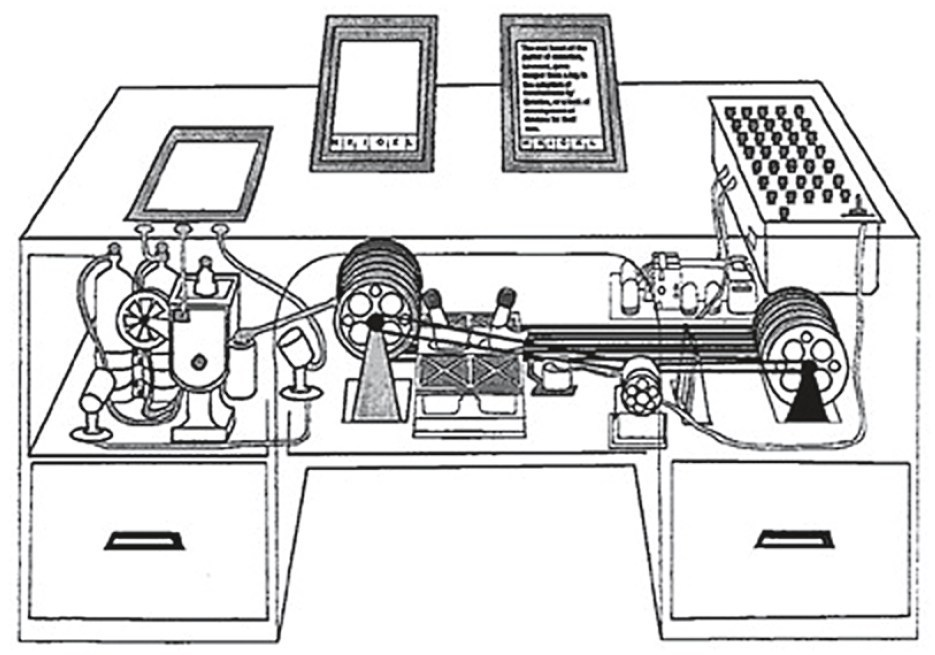

Il Memex
Tra gli "antenati" del personal computer,
prima ancora dell'avvento dell'era digitale, è spesso citato anche
il progetto Memex. Si trattava di un sistema di archiviazione ideato
dallo scienziato e tecnologo statunitense Vannevar Bush negli anni trenta
e mai realizzato.
Il memex (dalla contrazione di memory expansion) era un sistema nel quale
un singolo individuo avrebbe potuto registrare i propri libri, il proprio
archivio e le proprie comunicazioni personali, meccanizzato in modo da poter
essere consultato con eccezionali velocità e versatilità, una sorta di
"estensione privata" della sua memoria. Le sue caratteristiche rivoluzionarie
ne fanno un antenato dell'odierno personal computer. Era un dispositivo di tipo
elettro-ottico, che all'epoca rappresentava la più avanzata e promettente forma
di archiviazione delle informazioni. Il memex era descritto come una "scrivania"
dotata di "schermi traslucidi", una tastiera, un set di bottoni e leve.
